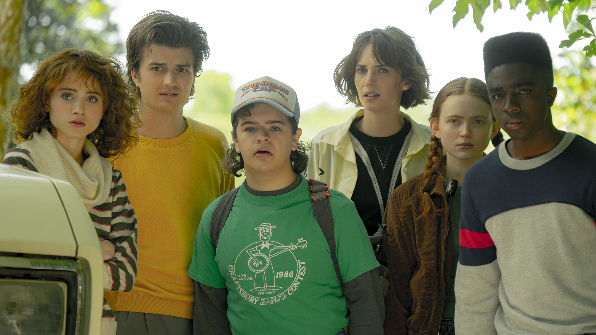

Stranger Things is set in the fictional rural town of Hawkins, Indiana, in the 1980s. The nearby Hawkins National Laboratory ostensibly performs scientific research for the United States Department of Energy but also secretly experiments with the paranormal and supernatural, sometimes with human test subjects. They have inadvertently created a portal to an alternate dimension they refer to as the Upside Down, whose presence begins to affect the residents of Hawkins in unusual ways.[7][8] The first season begins in November 1983. Will Byers is abducted by a creature from the Upside Down. His mother, Joyce; the town's police chief, Jim Hopper; and a group of volunteers search for him. A young psychokinetic girl named Eleven escapes from the laboratory and is found by friends of Will. Eleven befriends and assists them in their efforts to find Will.[9] The second season is set eleven months later, in October 1984. Will has been rescued, but he begins having premonitions of the fall of Hawkins caused by a creature in the Upside Down. When it is discovered that Will is still being possessed by an entity from the Upside Down, his friends and family learn that there is a larger threat to their world.[10] The third season is set nine months later, in the days leading up to the Fourth of July celebration in 1985. The new Starcourt Mall has become the center of attention for Hawkins residents, putting the majority of other local stores out of business due to the mall's popularity. Hopper becomes increasingly concerned about Eleven and Mike's relationship and becomes very protective of his daughter. Unbeknownst to the town, a secret Soviet laboratory underneath Starcourt seeks to open the gateway to the Upside Down. Meanwhile, the Mind Flayer uses mind control to make Billy do his bidding.[11][12] The fourth season is set eight months later, in March 1986. Joyce, Will, Eleven, and Jonathan have moved to Lenora, California for a fresh start. In California, Eleven struggles with the loss of her powers and being bullied in school. Meanwhile, in Hawkins, a being from the Upside Down—an entity later dubbed Vecna—begins killing the residents of Hawkins, opening new gates between the two worlds in the process. Planning to stop Vecna, Dr. Sam Owens takes Eleven to a facility to help her regain her powers. Simultaneously, Joyce and Murray fly to Russia to rescue Hopper from the Gulag in Kamchatka.
